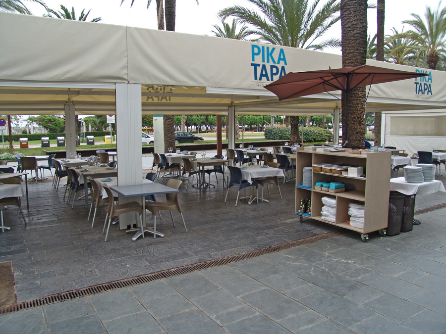
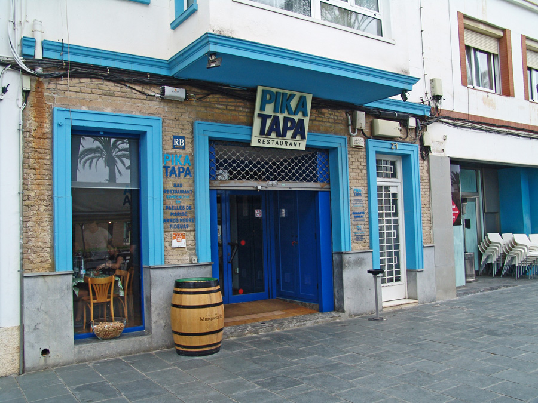
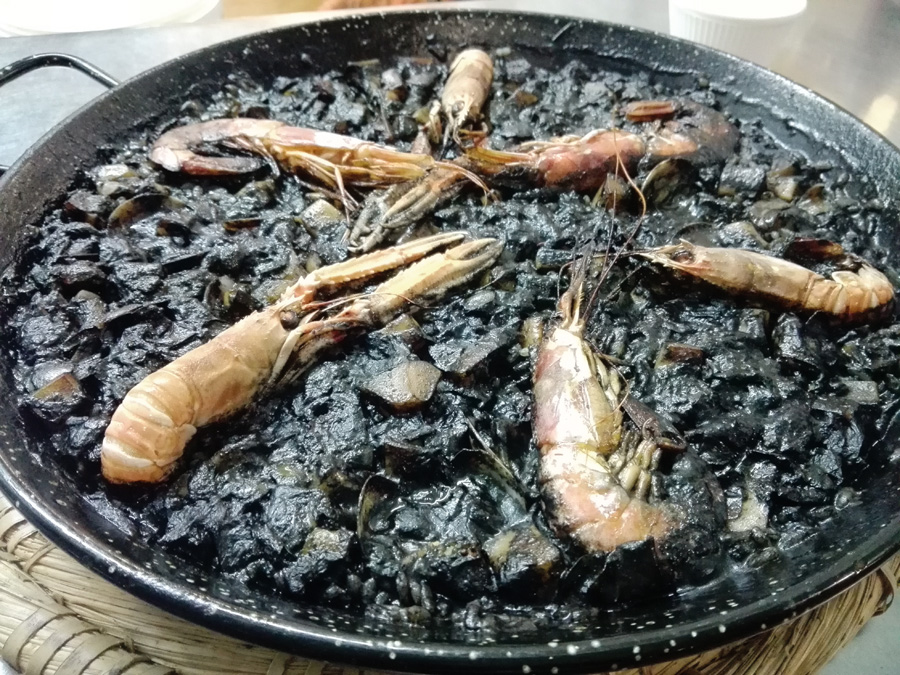
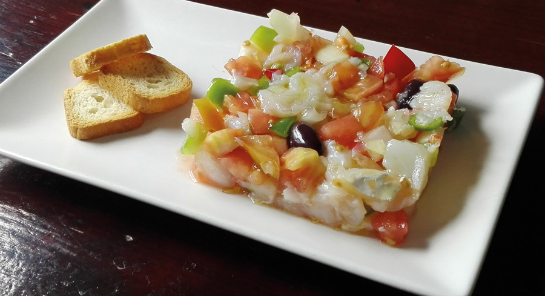
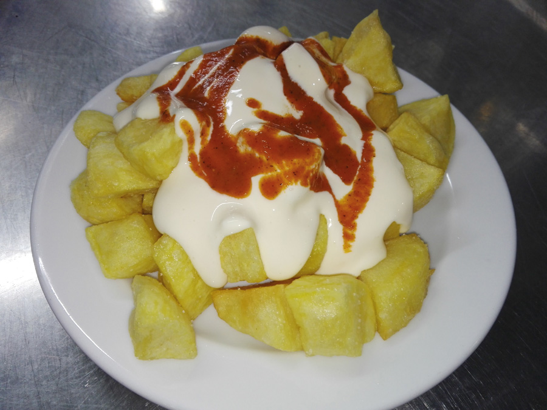

Arroces y fideuá
Paella de marisco, arroz negro, arroz con bogavante y fideuá. Elaborados con arroz DO del Delta del Ebro, a fuego lento y con el punto justo.
Ver carta
Arroces, tapas y mariscos de cocina tradicional marinera, con opciones sin gluten certificadas. Una terraza frente al parque de Ribes Roges para disfrutar del Mediterráneo.

Pika Tapa es un restaurante familiar situado en el Passeig del Carme, frente al parque de Ribes Roges, en pleno paseo marítimo de Vilanova i la Geltrú. Aquí encontrarás cocina mediterránea auténtica, con producto fresco y una carta pensada para compartir.
Destacamos por nuestros arroces (paella de marisco, arroz negro, fideuá), nuestras tapas de siempre y una atención especial a los clientes celíacos, con certificación de Celíacs de Catalunya.
Cocina mediterránea y marinera con los productos del mercado de Vilanova y el Delta del Ebro. Platos para compartir, tapas de siempre y arroces que son nuestra seña de identidad.
Paella de marisco, arroz negro, arroz con bogavante y fideuá. Elaborados con arroz DO del Delta del Ebro, a fuego lento y con el punto justo.
Ver cartaPatatas bravas, croquetas, ensaladilla rusa, chipirones, gambas al ajillo y mucho más. Tapas para picar y compartir en la terraza.
Ver cartaMejillones al vapor, navajas, sepia a la plancha, gambas langostineras. Producto fresco del día preparado con la sencillez de la cocina marinera.
Ver cartaDe lunes a viernes al mediodía, un menú completo con primer plato, segundo, postre y bebida. Cocina de mercado a precio accesible.
Ver horariosCertificados por Celíacs de Catalunya. Pan, pasta y postres sin gluten, además de arroces y tapas aptos para celíacos.
Más informaciónParticipamos en la tradicional Ruta del Xató, la fiesta gastronómica más emblemática de la comarca del Garraf y el Penedès.
Descubrir


Reseñas reales de clientes que han visitado Pika Tapa, recogidas de plataformas públicas de opinión.
Un aplauso para la camarera Sonia, tu paciencia es admirable y siempre estás sonriendo. Muy buen servicio.
Excelente relación calidad-precio. El menú del día de tres platos a 18 euros está muy bien. La carrillera de cerdo, impresionante.
Nuestro restaurante favorito. Las ensaladas son enormes y siempre frescas. El pulpo frito, espectacular.
Sí. Pika Tapa está certificado por Celíacs de Catalunya. Ofrecemos pan, pasta y postres sin gluten, además de arroces y tapas aptos para celíacos. Puedes consultar la sección de celíacos de nuestra carta para más detalle.
No es imprescindible, pero en temporada alta (verano y fines de semana) recomendamos reservar, especialmente si queréis mesa en la terraza. Podéis llamar al 938 15 12 84 o escribirnos por WhatsApp al 638 31 18 19.
Estamos en el Passeig del Carme 21, en Vilanova i la Geltrú, justo frente al parque de Ribes Roges y a pocos minutos del puerto deportivo.
Abrimos de miércoles a domingo en horario de mediodía. De jueves a sábado también por la noche hasta las 23:30. Los martes permanecemos cerrados. Los lunes abrimos solo al mediodía.
Sí, ofrecemos un menú del día de lunes a viernes al mediodía con primer plato, segundo, postre y bebida a un precio accesible.
Estamos en el Passeig del Carme de Vilanova i la Geltrú, frente al parque de Ribes Roges. Terraza con vistas, ambiente familiar y cocina de mar.